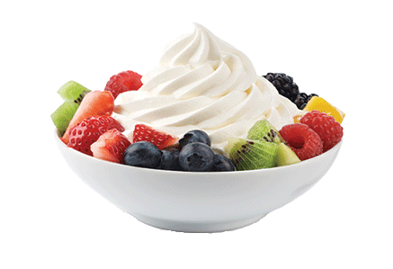
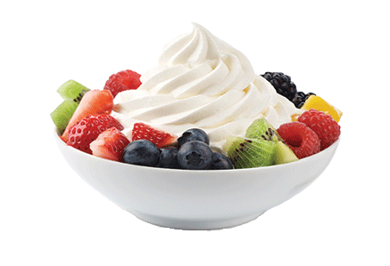

Giới Thiệu

Câu Chuyện Thương Hiệu
Khi dự án "Sữa chua trân châu" được đặt lên bàn, có rất nhiều câu hỏi bủa vây lấy chúng tôi: Làm sao để nhân bản một món ăn "đặc sản" nhưng vẫn đảm bảo chất lượng cho từng sản phẩm? Liệu rằng đây có phải mô hình phát triển bền vững hay chỉ là "cơn sốt" hạ nhiệt theo thời gian? Làm thế nào để tạo tính khác biệt giữa rất nhiều thương hiệu? Có muôn vàn khó khăn, thử thách khi xây dựng thương hiệu để khiến chúng tôi chùn bước. Nhưng chỉ cần một lý do đủ mạnh để tiếp tục, lý do mà chúng tôi bắt đầu.
Thực Hiện Ước Mơ
Anh Phạm Tuấn, được sinh ra trong gia đình có truyền thống làm sữa chua trân châu từ những năm 1990. Món ăn thơm ngon này đã nuôi dưỡng tuổi thơ anh và trở thành niềm nhớ thân thương mỗi khi anh xa nhà. Không chỉ đối với riêng anh Tuấn, sữa chua trân châu đã len lỏi vào từng ngõ ngách thành phố, trở thành món ăn vặt thân thuộc trong tiềm thức người dân nơi đây. Đã từ lâu, anh luôn ước mơ nhân bản món ăn này, không chỉ dừng lại ở dải đất chữ S, mà còn vươn ra thị trường quốc tế để giới thiệu với bạn bè năm châu về tinh hoa ẩm thực quê hương. Nhưng ước mơ ấy chỉ thật sự bắt đầu khi anh gặp hai người bạn đồng hành thân thiết sau này. Anh Lê Thanh và anh Nguyễn Minh là hai người bạn thuở thiếu thời. Vào một ngày mùa hè, hai anh có dịp ghé thăm anh Tuấn, thưởng thức sữa chua trân châu. Cuộc gặp gỡ tình cờ này là khởi nguồn ý tưởng của hệ thống sữa chua trân châu, mà cho tới giờ hay gọi vui là "cuộc gặp gỡ ngàn tỷ". Ba chàng trai trẻ năm ấy, dù mới chỉ gặp mà tưởng như đã thân quen từ lâu. Họ cùng chung lý tưởng sống, cùng "phải lòng" với sữa chua trân châu, cùng một ước mơ biến món ăn địa phương này trở thành niềm tự hào dân tộc.
Những Khởi Đầu Thuận Lợi
Khác với nhiều thương hiệu F&B có khởi đầu không mấy dễ dàng. Sữa chua trân châu lại được khách hàng đón nhận và ủng hộ ngay từ khi ra mắt cửa hàng đầu tiên. Chỉ sau hơn 3 tháng phát triển, thương hiệu Sữa chua trân châu đã có trên 30 cửa hàng trên khắp thủ đô và cho đến nay là 250 cửa hàng trên khắp cả nước. Điều gì đã làm nên sự thành công của thương hiệu? Không phải may mắn. Mọi mô hình phát triển bền vững đều xuất phát từ sản phẩm. Chúng tôi chọn sữa chua trân châu, không đơn thuần vì đây là một món ăn truyền thống của gia đình, mà còn bởi sức tiềm năng của sản phẩm đã được người dân đón nhận qua hàng chục anwm. Bên cạnh đó, để chuẩn hóa và nhân bản một sản phẩm mất rất nhiều thời gian, nguồn lực và chi phí. Một sai sót nhỏ trong công thức món ăn hay quy trình sản xuất cũng có thể phải "đập đi xây lai" từ đầu. Chỉ khi giữ nguyên bản hương vị, đồng thời, làm giàu hàm lượng dinh dưỡng trong từng sản phẩm, chúng tôi mới đủ tự tin để giới thiệu đến khách hàng. Có lẽ vì thế, thương hiệu Sữa chua trân châu đã chinh phục được tất cả các khách hàng, từ em bé đến phụ huynh, từ các bạn trẻ đến cả những người lớn tuổi.